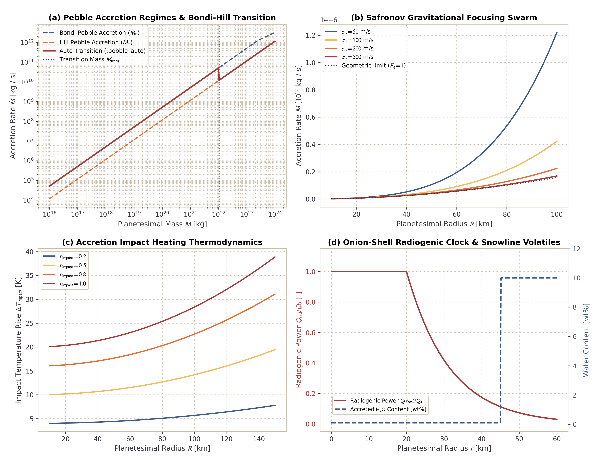

Planetesimal Accretion Engine, Impact Heating, and Onion-Shell Structure
This page documents the physical formulations, scaling laws, and numerical verification for the planetesimal accretion engine in Erebus.jl. The engine models Bondi and Hill pebble accretion regimes, Safronov planetesimal swarm gravitational focusing, analytical growth modes, exact 3D spherical geometric shell mapping, impact heating thermodynamics, protoplanetary disk water snowline coupling, and radiogenic onion-shell thermal structure from $^{26}\mathrm{Al}$ decay.
1. Physical Motivation
Planetesimals in the early Solar System accreted from pebbles and smaller planetesimals in circumstellar gas disks (Safronov, 1972; Ormel and Klahr, 2010; Lambrechts and Johansen, 2012):
- Pebble vs Planetesimal Swarm Regimes: Small dust grains grow into pebbles that drift through the gas disk. Planetesimals capture these pebbles through aerodynamic drag within their gravitational spheres of influence (Bondi and Hill regimes). Alternatively, planetesimal collisions govern growth in gas-depleted or turbulent disks through Safronov gravitational focusing.
- Accretion Duration and $^{26}\mathrm{Al}$ Clock: The primary heat source driving early planetesimal melting and differentiation is short-lived $^{26}\mathrm{Al}$ ($t_{1/2} \approx 0.717\text{ Myr}$). Because $^{26}\mathrm{Al}$ decays exponentially, planetesimals that accreted over finite durations (e.g. 1 to 3 Myr) developed concentric "onion-shell" thermal structures (Lichtenberg et al., 2019, 2021). The central primordial core absorbed peak radiogenic heating, whereas outer accreted layers inherited lower radionuclide concentrations and remained colder.
- Impact Heating: As planetesimals grow, accreted projectiles strike the surface with velocity $v_{\mathrm{imp}} \ge v_{\mathrm{esc}} = \sqrt{2GM/R}$. Impact kinetic energy converts to heat, raising the temperature of outer accreted shells and promoting early devolatilization.
- Snowline Volatile Coupling: Protoplanetary disk temperatures decline with heliocentric distance. Outside the water snowline ($T \le 160\text{ K}$), planetesimals accrete volatile-rich water ice and hydrated silicates. Inside the snowline, accreted material consists of dry anhydrous silicates.
2. Theoretical Background and Scaling Laws
The physical scaling laws, Keplerian orbital kinematics, Bondi and Hill capture regimes, Safronov gravitational focusing, exact 3D volume mapping, impact heating thermodynamics, and radiogenic onion-shell thermal structure are derived in detail in Planetesimal Accretion Mechanics.
Key regime thresholds implemented and verified in the solver include:
- Transition Mass ($M_{\mathrm{trans}}$): Bounding Bondi gas-dominated capture and Hill shear-dominated capture (Lambrechts and Johansen, 2012): $M_{\mathrm{trans}} = \sqrt{\frac{1}{3}} \, \frac{\Delta v^3}{G \Omega_K}$
- Gravitational Focusing Factor ($F_g$): Enhancing swarm collision cross-sections (Safronov, 1972): $F_g = 1 + \frac{v_{\mathrm{esc}}^2}{\sigma_v^2}$
- Exact Volume Increment ($\Delta R$): Conserving spherical shell volume on 2D grids: $\Delta R = \left( R^3 + \frac{3\,\Delta M}{4\pi\,\rho_{\mathrm{bulk}}} \right)^{1/3} - R$
- Impact Thermal Rise ($\Delta T_{\mathrm{impact}}$): Depositing retained kinetic energy into accreted shells: $\Delta T_{\mathrm{impact}} = \frac{h_{\mathrm{impact}} \, u_{\mathrm{acc}}}{c_p}$
3. Physical Verification Benchmarks
The 4-panel verification benchmark illustrates the scaling behaviors and physical invariants of the accretion engine:

Figure 1: Planetesimal accretion benchmark suite. Panel (a): Pebble accretion mass rate versus body mass across Bondi and Hill regimes, which displays the transition at $M_{\mathrm{trans}}$. Panel (b): Safronov gravitational focusing accretion rate versus planetesimal radius for varying velocity dispersions $\sigma_v$. Panel (c): Accretion impact heating temperature rise $\Delta T_{\mathrm{impact}}$ versus planetesimal radius for impact retention efficiencies $h_{\mathrm{impact}} \in [0.2, 1.0]$. Panel (d): Onion-shell radiogenic power profile $Q(t_{\mathrm{acc}})/Q_0$ and step-change in accreted volatile water content across the protoplanetary disk snowline.
4. Configuration Example
The TOML configuration snippet below enables pebble accretion with snowline volatile coupling and impact heating:
[accretion]
active = true
mode = "pebble_auto"
M_initial = 1.0e17 # Initial seed mass [kg]
R_initial = 20000.0 # Initial seed radius [m] (20 km)
rho_bulk = 3000.0 # Accreted rock bulk density [kg/m^3]
M_target = 1.0e20 # Target final mass [kg]
R_target = 60000.0 # Target final radius [m] (60 km)
t_start_myr = 0.1 # Accretion onset time [Myr]
t_duration_myr = 2.0 # Accretion duration [Myr]
h_impact = 0.6 # Impact kinetic energy retention fraction
cp_rock = 1000.0 # Specific heat capacity [J/(kg K)]
phi_accreted = 0.30 # Initial porosity of accreted shell
snowline_coupling = true # Couple volatile content to disk snowline
T_snowline_cond = 160.0 # Condensation temperature threshold [K]
stokes_number = 0.05 # Aerodynamic pebble Stokes number
alpha_turbulence = 1.0e-3 # Disk turbulence parameter
Sigma_peb_0 = 40.0 # Pebble surface density at 1 AU [kg/m^2]
track_accretion_time = true